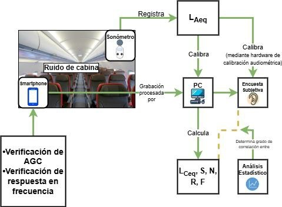

Metodología Experimental
Diseño del Experimento
Se diseñó un sistema de adquisición de datos portátil y calibrado para operar en condiciones de vuelo real. El setup incluye micrófonos de medición clase 1, grabadoras digitales de alta resolución y sonómetros integradores.
- Grabación: 48kHz / 24-bit.
- Normativa: ISO 5129 (Acústica en cabinas).
- Validación: Calibración in-situ pre y post vuelo.

Fig 1. Diagrama de bloques del sistema de medición.
Puntos de Medición
Las mediciones se realizaron en puntos estratégicos para capturar la variabilidad del campo sonoro: Cockpit (pilotos), Galley delantero y Galley trasero (tripulación de cabina).

Fig 2. Distribución espacial de los puntos de medición en la aeronave.